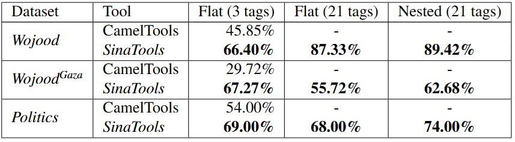

-
Models: Flat, Nested, and Fine-grain BERT models.
Wojood Corpus: 560K tokens (MSA and dialect), manually annotated with 21 entity types, annotated with nested and flat entities (See Article). covers multiple domains (Media, History, Culture, Health, Finance, ICT, Law, Elections, Politics, Migration, Terrorism, social media).
Konooz Corpus: Multi-domain Multi-dialect - 777K tokens in 16 Arabic dialects across 10 domains, 160 distinct corpora. (See Article).
WojoodFine Corpus: Same as Wojood but extended with subtypes of entities (51 tags in total), (See Article).
WojoodGaza Corpus: 60K tokens related to Israeli War on Gaza in domains (See Article).
WojoodOntology: 55 concepts (named entity types) and 40 relationships, including subclass and equivalent class relations (See Article).
Tags and Guidelines:
NORP (group of people) DATE ORDINAL OCC (occupation) TIME PERCENT ORG (organization) subtypes LANGUAGE QUANTITY GPE (geopolitical entity) subtypes WEBSITE UNIT LOC (geographical location) subtypes LAW MONEY FAC (facility: landmarks places) subtypes PRODUCT CURR (currency) ORG:
GOV
COM
EDU
ENT
NONGOV
MED
REL
SCI
SPO
ORG_FACGPE:
COUNTRY
STATE-OR-PROVINCE
TOWN
NEIGHBORHOOD
CAMP
GPE_ORG
SPORTLOC:
CONTINENT
CLUSTER
ADDRESS
BOUNDARY
CELESTIAL
WATER-BODY
LAND-REGION-NATURAL
REGION-GENERAL
REGION-INTERNATIONALFAC:
PLANT
AIRPORT
BUILDING-OR-GROUNDS
SUBAREA-FACILITY
PATH
Please email Prof. Jarrar (mjarrar AT birzeit.edu) for the annotation guidelines -
SinaTools: NER module as python library.
GitHub: training source code + sample data (~35K tokens).
Hugging Face: fine-tuned BERT model using Wojood.
Wojood Corpus (Corpus only)
Konooz Corpus (Corpus only)
WojoodGaza Corpus (Corpus only)
WojoodFine Corpus (Corpus only)
WojoodOntology (Ontology only) -
Evaluation of SinaTools NER moduleWe benchmarked SinaTools using three datasets: (Wojood Test-set) and two additional out-of-domain datasets (WojoodGaza and Politics). We evaluated three NER scenarios: 3 tags (PERS, LOC and ORG), 21 Flat tags, and 21 Nested tags. See article [1] for the details.

-
Alaa Aljabari, Nagham Hamad, Mohammed Khalilia, Mustafa Jarrar: WojoodOntology: Ontology-Driven LLM Prompting for Unified Information Extraction Tasks. In Proceedings of the Third Arabic Natural Language Processing Conference (ArabicNLP), China, ACL.
Nagham Hamad, Mohammed Khalilia, Mustafa Jarrar: Konooz: Multi-domain Multi-dialect Corpus for Named Entity Recognition. In Proceedings of ACL 2025, Austria, ACL.
Mustafa Jarrar, Nagham Hamad, Mohammed Khalilia, Bashar Talafha, AbdelRahim Elmadany, Muhammad Abdul-Mageed: WojoodNER 2024: The Second Arabic Named Entity Recognition Shared Task. In Proceedings of the Second Arabic Natural Language Processing Conference (ArabicNLP 2024), Bangkok, Thailand. Association for Computational Linguistics.
Mustafa Jarrar, Muhammad Abdul-Mageed, Mohammed Khalilia, Bashar Talafha, AbdelRahim El-madany, Nagham Hamad, Alaa’ Omar: WojoodNER 2023: The First Arabic Named Entity Recognition Shared Task. In Proceedings of the 1st Arabic Natural Language Processing Conference (Arabic- NLP), Part of the EMNLP 2023. ACL.
Haneen Liqreina, Mustafa Jarrar, Mohammed Khalilia, Ahmed Oumar El-Shangiti, Muhammad AbdulMageed:Arabic Fine-Grained Entity Recognition. In Proceedings of the 1st Arabic Natural Language Processing Conference (ArabicNLP), Part of the EMNLP 2023. ACL.
Mustafa Jarrar, Mohammed Khalilia, Sana Ghanem: Wojood: Nested Arabic Named Entity Corpus and Recognition using BERT. In Proceedings of the International Conference on Language Resources and Evaluation (LREC 2022), Marseille, France. 2022